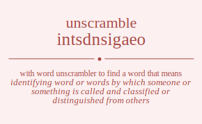

The word found after unscrambling intsdnsigaeo means that identifying word or words by which someone or something is called and classified or distinguished from others, the act of putting a person into a non-elective position, the act of designating or identifying something, .
intsdnsigaeo has jumble solution. Please see which words made after unscrambling intsdnsigaeo.
Daily Jumble Solution: designations
You can use following links to see other word jumble solutions for the same day
ezoagb intsdnsigaeo isntsi nasdt penit

Unscrambled 12 letter words from intsdnsigaeo
designations
Unscrambled 11 letter words from intsdnsigaeo
isoantigens
designation
Unscrambled 10 letter words from intsdnsigaeo
ingestions
dissention
distension
digestions
dissenting
diosgenins
isoantigen
daintiness
disseating
destaining
Unscrambled 9 letter words from intsdnsigaeo
ingestion
seditions
desisting
digestion
gneissoid
destining
indigents
dinginess
diosgenin
sensation
antinoise
agonistes
assenting
sensating
tanginess
negations
seasoning
dissonant
nidations
standings
diagnosis
sandstone
sedations
antinodes
sanitised
ideations
iodinates
sanidines
steadings
diagnoses
diseasing
detaining
Unscrambled 8 letter words from intsdnsigaeo
tensions
inosites
noisiest
tininess
inosines
ginniest
insisted
tidiness
editions
sedition
denoting
dingiest
indigoes
enditing
indigent
indigens
onanists
agonists
sainting
staining
astonies
insanest
stanines
enations
sonatine
isatines
sanities
sanitise
teniasis
negatons
tonnages
eastings
giantess
seatings
agonises
antigens
gentians
negation
anginose
distains
nidation
standing
donating
siganids
iodating
nidating
destains
sandiest
astonied
sedation
adenosis
adonises
anointed
antinode
adenitis
dainties
ideation
iodinate
sanidine
godetias
sedating
steading
assigned
agonised
diagnose
ideating
Unscrambled 7 letter words from intsdnsigaeo
stingos
tossing
stoning
nosings
noising
sonnets
nosiest
sennits
intones
tension
sonnies
inosite
ionises
intines
inosine
egoists
stogies
ingests
signets
nesting
tensing
ensigns
sensing
ignites
seising
insigne
seining
dossing
tidings
dissing
sidings
indigos
dinting
tendons
dissent
snidest
dentins
indents
intends
intoned
iodises
indites
tineids
insides
edition
iodines
ionised
stodges
digests
nidgets
designs
ingoted
dingoes
denting
tending
endings
sending
dieting
editing
ignited
dingies
indigen
sonants
anoints
nations
onanist
nasions
isatins
agonist
gitanos
antings
staning
atoning
saining
entasis
nasties
seitans
sestina
tansies
tisanes
atonies
inanest
stanine
siennas
enation
isatine
asinine
onstage
gannets
negaton
tonnage
nonages
ageists
sagiest
easting
eatings
ingates
ingesta
seating
teasing
agonies
agonise
anteing
antigen
gentian
innages
distain
doating
ganoids
sanding
siganid
gonidia
donates
disseat
iodates
toadies
destain
detains
instead
nidates
sainted
stained
daisies
inedita
dotages
dosages
seadogs
stanged
tangoed
agisted
godetia
deaning
Unscrambled 6 letter words from intsdnsigaeo
nitons
insist
inions
stings
ingots
stingo
tigons
gnosis
noting
toning
nosing
siting
tining
onsets
setons
stenos
stones
nonets
sonnet
tenons
tonnes
insets
steins
enosis
eosins
essoin
noesis
noises
ossein
sonsie
sennit
tennis
intone
seniti
niseis
seisin
ionise
intine
gnoses
segnos
egoist
stogie
ingest
signet
tinges
gneiss
singes
toeing
soigne
ensign
ignite
tieing
odists
idiots
iodins
doting
doings
dosing
digits
tiding
siding
indigo
dining
indign
niding
tossed
stoned
sondes
tendon
deists
desist
todies
teinds
donsie
noised
onside
dentin
indent
intend
tinned
sinned
teiids
tidies
diesis
iodise
indite
tineid
indies
inside
iodine
godets
stodge
tonged
digest
dogies
geoids
nidget
tinged
deigns
design
dinges
signed
singed
ending
ginned
dieing
santos
sonant
saints
satins
stains
anoint
nation
anions
nasion
isatin
angsts
stangs
tangos
tongas
gossan
agists
staigs
gainst
giants
sating
assign
gitano
anting
saning
assent
sanest
stanes
atones
season
anenst
sennas
siesta
tassie
seitan
tenias
tineas
tisane
anises
sanies
sansei
innate
inanes
insane
sienna
eonian
sagest
stages
agents
agones
genoas
gannet
nonage
ageist
eating
ingate
easing
innage
stands
donnas
sadist
tsadis
adonis
danios
dongas
gonads
dating
ganoid
aiding
stades
steads
tsades
staned
sedans
atoned
donate
anodes
tanned
asides
daises
dassie
iodate
detain
nidate
sained
gasted
staged
gassed
dotage
togaed
dagoes
dosage
seadog
tanged
gaited
gained
Unscrambled 5 letter words from intsdnsigaeo
snots
snits
niton
intis
inion
tongs
snogs
songs
gists
sting
tings
signs
sings
ingot
tigon
nests
notes
onset
seton
steno
stone
tones
noses
sones
nonet
tenon
tonne
neons
nones
sites
sties
inset
neist
nites
senti
stein
tines
sines
eosin
noise
nines
issei
nisei
gests
gesso
segos
gents
segno
gites
tinge
segni
sengi
singe
genii
doits
odist
dints
tondi
dinos
idiot
nitid
iodin
dongs
dings
dingo
doing
digit
doest
dotes
doses
dents
tends
sends
sneds
noted
toned
nodes
nosed
sonde
donne
deist
diets
dites
edits
sited
stied
tides
sides
eidos
teind
tined
dines
nides
snide
inned
teiid
indie
godet
doges
dogie
geoid
deign
dinge
oasts
stoas
santo
nonas
satis
iotas
ostia
stoai
oasis
ossia
antis
saint
satin
stain
tains
sains
sasin
anion
gasts
stags
goats
togas
sagos
angst
gnats
stang
tangs
snags
tango
tonga
agons
agist
gaits
staig
agios
giant
gains
signa
gonia
asset
easts
sates
seats
tasse
stoae
toeas
oases
antes
etnas
nates
neats
stane
sanes
sensa
atone
oaten
aeons
anent
senna
entia
tenia
tinea
anise
inane
gates
getas
stage
gases
sages
togae
agent
agone
genoa
aegis
datos
doats
toads
sodas
stand
sands
donas
donna
adits
ditas
staid
tsadi
sadis
saids
adios
danio
oidia
dagos
goads
dangs
donga
gonad
gadis
dates
sated
stade
stead
tsade
sades
anted
deans
saned
sedan
anode
aides
aside
ideas
gated
degas
egads
Unscrambled 4 letter words from intsdnsigaeo
sots
toss
snot
tons
sons
sits
nits
snit
tins
sins
into
ions
inns
inti
nisi
togs
tong
nogs
snog
song
gist
gits
ting
gins
sign
sing
sets
toes
oses
nest
nets
sent
tens
ness
note
tone
eons
noes
nose
ones
sone
neon
none
site
ties
seis
nite
tine
sine
nine
gest
gets
tegs
segs
egos
goes
sego
gent
engs
gens
negs
gone
gite
egis
gies
gien
dost
dots
tods
doss
sods
dons
nods
dits
diss
doit
dint
dins
dino
nodi
nidi
dogs
gods
dong
digs
gids
ding
teds
dote
toed
does
dose
odes
dent
tend
dens
ends
send
sned
done
node
diet
dite
edit
tide
tied
dies
ides
side
deni
dine
nide
geds
doge
gied
tass
oast
oats
stoa
taos
ossa
ants
tans
sans
nota
naos
nans
anon
nona
aits
sati
iota
anti
tain
ains
anis
sain
naoi
inia
gast
gats
stag
tags
sags
goat
toga
goas
sago
gnat
tang
nags
sang
snag
agon
gait
agio
agin
gain
ates
east
eats
etas
sate
seat
seta
teas
seas
toea
ante
etna
neat
anes
sane
aeon
gate
geta
ages
gaes
sage
gaen
gane
tads
dato
doat
toad
ados
odas
soda
ands
dans
sand
dona
adit
dita
aids
dais
sadi
said
dags
gads
dago
goad
dang
gadi
date
sade
odea
dean
aide
idea
aged
egad
gaed
Unscrambled 3 letter words from intsdnsigaeo
sot
sos
not
ton
nos
ons
son
its
sit
tis
sis
nit
tin
ins
sin
ion
inn
got
tog
gos
nog
git
gin
set
ess
toe
oes
ose
net
ten
ens
sen
eon
one
tie
sei
get
teg
seg
ego
eng
gen
neg
gie
dot
tod
dos
ods
sod
don
nod
dit
dis
ids
din
dog
god
dig
gid
ted
eds
doe
ode
den
end
die
ged
sat
tas
ass
oat
tao
ant
tan
nan
ait
ais
ain
ani
gat
tag
ags
gas
sag
ago
goa
gan
nag
ate
eat
eta
tae
tea
sae
sea
ane
nae
age
gae
tad
ads
sad
ado
oda
and
dan
aid
dag
gad
Unscrambled 2 letter words from intsdnsigaeo
to
os
so
no
on
it
ti
is
si
oi
in
go
et
es
oe
en
ne
do
od
id
de
ed
at
ta
as
an
na
ai
ag
ae
ad